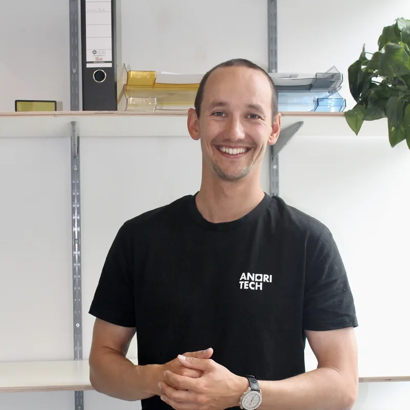
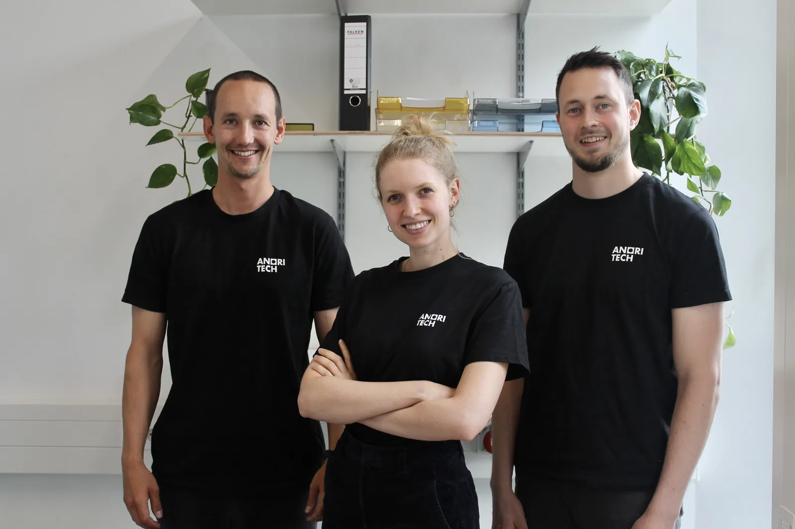
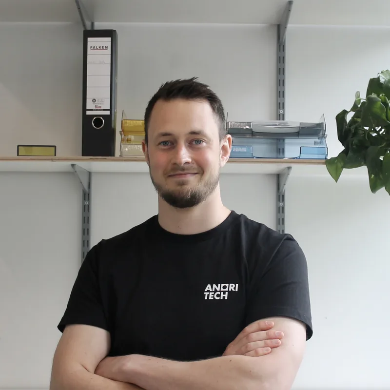
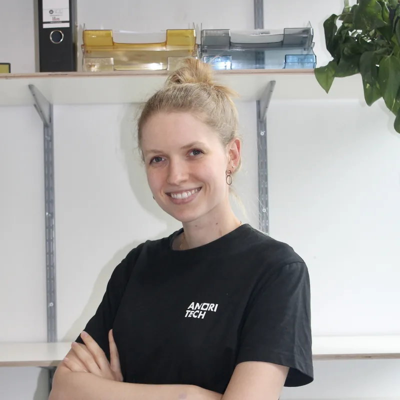
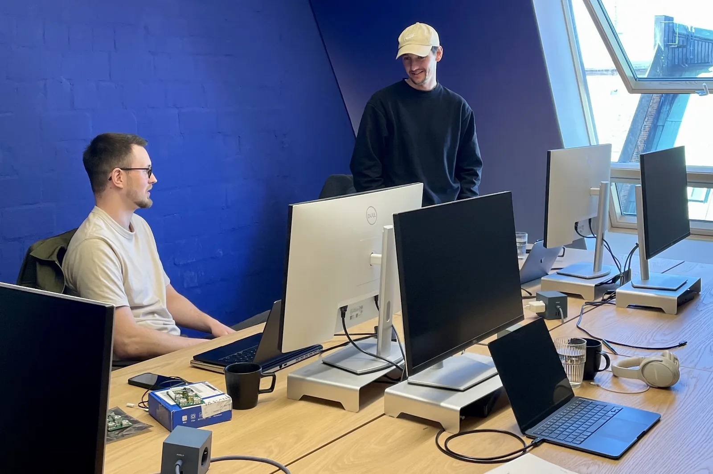
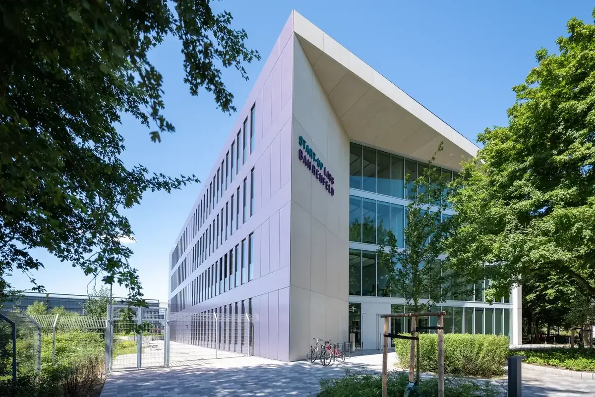
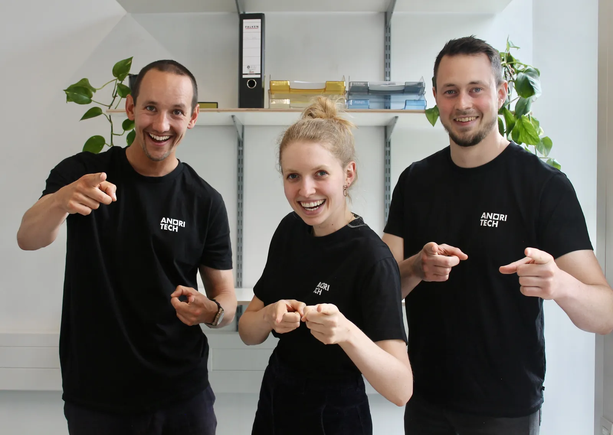

Jan Mauch
CEO · Strategy & finance
Industrial engineer with experience in SMT manufacturing, strategy and venture building.
The energy transition depends on batteries. Almost all of these batteries need a battery management system (BMS). The BMS is like the brain of the battery: it protects the battery against short circuits, measures voltages, current and much more. It makes sure the battery works exactly as it should.
As battery applications expand into robotics, defence and energy storage, outdated BMS architectures built for a single use case or a single industry can no longer keep up. That turns the BMS into the bottleneck in the development of modern battery packs.
Anori Tech solves this with a modular library of pre-certified software building blocks and an AI-assisted configuration process that delivers a tailored BMS within days instead of months.
That makes small series commercially viable, new products feasible, and existing batteries longer-lasting, safer and more efficient.

Safety-critical electronics, industrial manufacturing and building new business units. Jan and Anina know each other from their previous employer, where they brought three corporate startups to market together as intrapreneurs. Stefan brings the deep electrical engineering expertise.

CEO · Strategy & finance
Industrial engineer with experience in SMT manufacturing, strategy and venture building.

CTO · Embedded & safety
Embedded and functional safety expert for safety-critical battery systems.

COO · Operations & marketing
Business expert for operations, go-to-market and brand building in the technology space.
Become an Anori
We would love to hear from you!
Between January and July 2026 we spoke with more than 60 European battery pack manufacturers and system integrators. The answer was almost always the same: the cell is not the problem, the battery management system is.
Originally, we wanted to install old car batteries in sailboats. While looking for a suitable BMS, we realised that no matching product existed on the market. That was the original reason we started talking to battery manufacturers in the first place.
One manufacturer, for example, reported spending more than a year developing its own BMS after failing to find anything suitable on the market. Another had to turn down customer orders because it knew it would not get a suitable BMS in time.
The reason is structural. Most commercial BMS platforms were built for exactly one application in one specific industry. Safety logic, battery model, interfaces and diagnostics are tightly coupled in the code. Anyone with a new use case has to either start development completely from scratch, or awkwardly bolt something onto an existing BMS, which always results in a mediocre solution at best, or does not work at all. Both are slow and expensive.

Batteries are moving into more and more applications, and each brings its own technical and regulatory requirements. Robotics, drones, marine, light electric vehicles and stationary storage place different demands on protection functions, interfaces and standards. At the same time, new cell chemistries reach the market faster than existing BMS architectures can absorb them.
Then there is regulation. From 18 February 2027 the EU Battery Passport makes it mandatory to keep battery data available and traceable across the entire lifecycle. That cannot be retrofitted by adapting an existing BMS; it has to be designed into the architecture. The market for battery management systems is growing at around 20 percent annually according to common estimates, making it one of the fastest-growing segments of the battery market.

Anori Tech is supported by the Battery Startup Incubator (BaStI) of TUM Venture Labs. That gives us access to the German battery ecosystem and to specialised technical guidance.
More about BaStIAnori Tech is part of the QIMP high-tech incubator in Braunschweig, funded through NBank Niedersachsen. QIMP supports us continuously with advice and network access.
More about QIMPThe development and certification of the first series-ready BMS generation for the low-voltage market is funded through the InnoRampUp programme of IFB Hamburg.
More about InnoRampUp
„For example, Anina Tietjens and her startup Anori Tech solve the problem faced by many battery manufacturers of having to turn down orders because they are missing a crucial component: the battery management system. A modular system provides the solution.“
Read the article
„Den Anfang machte Anina Tietjens von Anori Tech. Sie erklärte, dass Batteriehersteller häufig Aufträge ablehnen müssten, weil ihnen ein geeignetes Batteriemanagementsystem fehle. Das ist die zentrale Steuereinheit für wiederaufladbare Batterien. Anori Tech hat nun ein modulares System entwickelt, dass die Herstellung wesentlich vereinfacht.“
Read the article
„Fast jede Batterie braucht ein Batterie Management System. Anori Tech hilft Batterieherstellern, schneller und günstiger hochwertige BMS zu entwickeln und zu bekommen.“
Read the article
„Anori Tech entwickelt ein flexibles Batteriemanagementsystem für Batteriehersteller. Eine modulare Hard- und Softwarearchitektur ermöglicht schnelle Anpassungen an unterschiedlichste Batterie-Anwendungsfälle, damit Hersteller Kundenanforderungen schneller und kosteneffizienter umsetzen können.“
Read the article
„Some start-up ideas emerge in a workshop. Others begin on the water. For this founders, it began with a plan to install car batteries in a sailboat. While searching for a suitable battery management system, they discovered a gap that many battery manufacturers were facing as well: the right product simply didn’t exist.“
To the BaStI communityWe work at Startup Labs Bahrenfeld: hardware build, testing and pre-compliance work in one place, right next to the desk.
That is why a prototype takes 10 days with us and not 10 weeks: we do not have to book a slot with a service provider for every test.
Luruper Hauptstraße 1
22547 Hamburg

Last updated:
Fascinated by batteries and keen to play an active part in the energy transition? Then have a look at our open roles or send us a speculative application.
